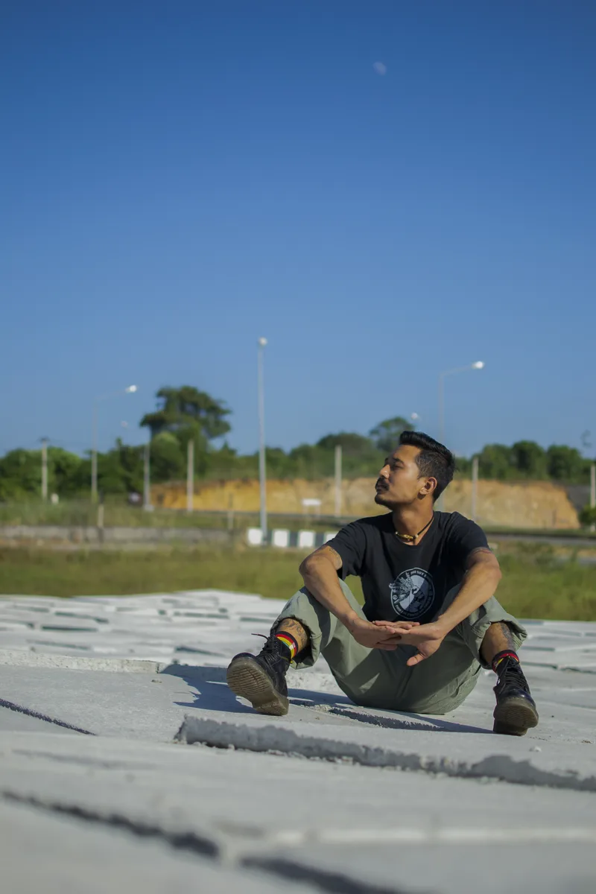

From street corners to concert halls. Protests to prize fights. Every frame, a story.

Thaw Zin Htet, known as Kaung Kaung, is a Burmese documentary and street photographer based in Mae Sot, Thailand. Born on April 24, 1998 in Myanmar, he was forced to flee his homeland due to political upheaval following the 2021 military coup.
After actively participating in pro-democracy protests from February 2021, Kaung Kaung faced military raids on his home and was forced to flee through KNU-controlled ethnic liberation areas. He witnessed intense fighting in Lay Kay Kaw and helped evacuate civilians under fire before reaching Thailand in January 2022.
Now living as a refugee on the Thai-Myanmar border, he channels his experiences into powerful visual narratives. His camera becomes his voice — capturing street life, concert culture, Muay Thai fights, mountain landscapes, and the quiet dignity of displaced communities.
"Every moment of truth deserves a witness. I am that witness."
Born in Myanmar — a story begins
Joined pro-democracy protests, camera in hand
Fled to Thailand through conflict zones
Documenting life on the Thai-Myanmar border
Collaborations. Event coverage. Documentary projects.
Got a story? Let's tell it.